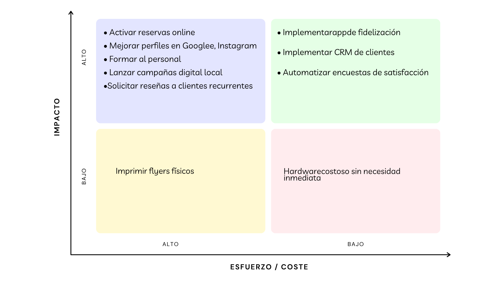

PLAN DE TRANSFORMACIÓN DIGITAL
Contenido
- Introducción al Plan de transformación Digital.
- Diagnóstico y Reflexión Estratégica
- Análisis interno de la situación digital actual
- Análisis externo de sector de barberías y competencia
- Definición inicial de áreas de actuación prioritarias
- Transformando la experiencia del cliente
- Perfil del cliente ideal (buyerpersona)
- Mapa de empatía del cliente
- Mapa de experiencia del cliente (customerjourneymap)
- Lienzo del modelo de negocio
- Habilitando la Transformación
- Lienzo de transformación digital
- Tecnologías y herramientas a implementar
- Priorización de soluciones digitales
- Gestionando el Cambio
- Objetivos específicos y KPIspara la barbería
- Plan de acción con iniciativas priorizadas
- Constitución del equipo líder del cambio
- Análisis de formación necesaria
- Cronograma de implementación
- Presupuesto e inversión requerida
- Sectores de Aplicación Específicos para Barberías
- Gestión de citas y reservas online
- Experiencia digital del cliente
- Marketing digital y redes sociales
- Presencia online y reputación digital
1. Introducción al Plan de Transformación Digital
El presente Plan de Transformación Digital se enmarca en la
iniciativa Generación Digital PYMES, financiada por la Unión
Europea, cuyo objetivo es acelerar la digitalización de las pequeñas
y medianas empresas. Este documento propone un conjunto de acciones
que permitirán a la
Barbería El Corte Moderno modernizar su operativa,
mejorar su relación con los clientes y aumentar su competitividad
mediante el uso estratégico de herramientas digitales.
El Corte Moderno
es una barbería de estilo urbano que destaca por ofrecer servicios
personalizados de corte y arreglo de barba en un ambiente
contemporáneo y cercano. Actualmente, su presencia digital se limita
a su cuenta de Instagram, donde comparte contenidos visuales sobre
su trabajo y estilo. Las reservas se gestionan de manera
tradicional, a través de llamadas telefónicas o mensajes de
WhatsApp, lo que limita la automatización y escalabilidad del
negocio.
Este plan pretende servir como hoja de ruta para impulsar la
transformación digital del negocio, optimizando procesos internos,
mejorando la experiencia del cliente y ampliando su visibilidad
online mediante herramientas de gestión, canales digitales y
estrategias de marketing más eficaces.
🎯 Misión
Ofrecer experiencias de barbería de alta calidad que combinen tradición y tendencias actuales, en un ambiente moderno, profesional y cercano.
🚀 Visión
Ser una barbería de referencia en Madrid por su estilo, innovación, atención personalizada y adaptación al entorno digital.
💎 Valores
- Profesionalidad y excelencia en el servicio
- Innovación y adaptación a las tendencias
- Cercanía y confianza con el cliente
- Pasión por el detalle
- Compromiso con la mejora continua
💼 ¿Qué hacemos?
Brindamos servicios de corte moderno, arreglo y diseño de barba, perfilado, cuidado capilar masculino y asesoría de imagen. Vendemos estilo, autoestima y una experiencia personalizada para cada cliente.
🔮 Prospectiva
En un entorno cada vez más digital y competitivo, la barbería debe evolucionar hacia un modelo más automatizado, con mejor gestión de clientes, visibilidad online profesional, análisis de datos y fidelización digital.
2. Diagnóstico y Reflexión Estratégica
ANÁLISIS INTERNO –

Realizar la autoevaluación de transformación digital a través de Acelera Pyme ha sido una experiencia reveladora para mí y para el proyecto de Barbería El Corte Moderno. Hasta ahora, nos hemos manejado bien con Instagram como único canal de visibilidad y la gestión de reservas por WhatsApp o teléfono. Pero este ejercicio me ha hecho ver que, aunque hemos dado ciertos pasos en la dirección correcta, aún queda mucho camino por recorrer si queremos crecer y profesionalizarnos digitalmente. Según los resultados, nos encontramos en una fase intermedia, lo que me parece acertado. Ya tenemos conciencia de la importancia del mundo digital, nos estamos formando, y poco a poco la mentalidad dentro del negocio se está alineando con esta necesidad.
Este es un buen punto de partida, pero también es una llamada de atención para no quedarnos estancados. Me sorprendió gratamente ver que hay aspectos en los que estamos más avanzados de lo que pensaba, como la estrategia digital inicial, cierta sensibilización sobre ciberseguridad y el uso básico de canales digitales con clientes y otras entidades. Estas pequeñas bases son valiosas y motivadoras. Sin embargo, también fui muy consciente de nuestras debilidades, especialmente en lo relacionado con la infraestructura tecnológica, automatización de procesos, venta online y herramientas internas de gestión. Uno de los puntos que más me hizo reflexionar fue el tema de los canales de venta y medios de pago digitales. En un sector tan visual y competitivo como el nuestro, depender solo de las redes sociales no es suficiente. Es evidente que necesitamos dar el paso a una página web profesional, ofrecer más formas de pago, y sobre todo, empezar a recopilar y analizar datos de clientes para entender mejor sus necesidades y hábitos
ANÁLISIS INTERNO –

Después de realizar el Test de Diagnostico Digital, he podido tener una visión mucho más clara y honesta del punto en el que se encuentra Barbería El Corte Moderno dentro del proceso de transformación digital. Los resultados no me sorprendieron del todo, pero sí me ayudaron a poner nombre y número a varias intuiciones que ya tenía: nuestro nivel de digitalización es bajo. Este diagnóstico se basa en el índice de intensidad digital, que nos coloca en una franja de 4 a 6 puntos. Aunque no es el peor escenario, sí deja claro que tenemos mucho por mejorar para estar al nivel de otras pymes que ya aprovechan todas las ventajas del mundo digital. Para una barbería que solo tiene presencia en Instagram y gestiona citas por WhatsApp o llamadas, es evidente que estamos aún en una etapa bastante básica. en el entorno actual no basta con estar en redes sociales.
El test demuestra que muchas pymes ya usan las redes con objetivos claros de marketing, fidelización y ventas. Nosotros usamos Instagram más como una galería de cortes que como una herramienta de negocio. Hay margen para profesionalizar ese canal, medir resultados y mejorar el alcance. Esta autoevaluación me ayudó a entender que la digitalización no es solo una moda o una obligación, sino una oportunidad real para crecer, ser más competitivos y ofrecer un mejor servicio.
ANÁLISIS INTERNO –

El resultado del test nos situó en un nivel medio de ciberseguridad (entre un 34% y un 66%). Al principio, esto me pareció aceptable, incluso positivo. Sin embargo, al reflexionar más a fondo, entendí que un “nivel medio” no es un punto de llegada, sino más bien un punto de partida. Significa que reconocemos la importancia de la ciberseguridad, pero todavía hay muchas medidas que no hemos adoptado y que podrían marcarnos la diferencia entre estar protegidos o vulnerables. Una de las recomendaciones más claras del informe fue la necesidad de seguir reforzando las acciones de seguridad que ya tenemos, pero también incorporar nuevas medidas adaptadas a nuestras necesidades específicas. Por ejemplo, aunque tenemos contraseñas seguras y usamos herramientas básicas de protección, no contamos con protocolos claros ante un posible ataque, ni tenemos formación interna sobre cómo actuar frente a riesgos digitales.
Otro punto clave fue la concienciación del equipo. En una barbería pequeña como la nuestra, muchas veces no se piensa que formar al personal en ciberseguridad sea necesario, pero ahora me doy cuenta de que incluso algo tan simple como abrir un enlace malicioso desde el móvil de trabajo podría suponer un problema serio. La seguridad digital no depende solo de programas y antivirus, también de las personas que los usan. En resumen, esta autoevaluación me sirvió para tomar conciencia real de que la ciberseguridad es tan importante como tener bien afiladas las tijeras o limpio el local.
🎯 ANÁLISIS EXTERNO - OTRAS EMPRESAS
| Empresa innovadora | Modelo de negocio | Estrategia digital | Productos/Servicios |
|---|---|---|---|
| Barber Shop La Máquina | Barbería urbana en Madrid, atención local, orientada a clientes de todas las edades | Plataforma de reservas online vía Booksy, reseñas verificadas, permite elegir profesional y horario | Corte clásico, degradado, arreglo de barba, servicios para niños y jubilados |
| Los Parceritos Barber Studio | Barbería joven y moderna, con atención personalizada y estilo latino. | Reservas por Booksy, Instagram activo con reels y publicaciones frecuentes | Corte más barba, diseños, cejas, servicio rápido y precios competitivos. |
| GrandMaster BarberShop | Barbería urbana de estilo moderno, con fuerte identidad visual y clientela joven. | Instagram como canal principal de marketing, estética profesional, interacción en redes. | Cortes degradados, diseños personalizados, perfilado de barba y estilos urbanos. |
| Tijera de Oro | Barbería local con enfoque integral en estética masculina, ubicada en Madrid. | Reservas online por Booksy, presencia en Instagram con reels, estilos y promociones visuales. | Corte clásico y moderno, arreglo de barba, diseño de cejas, alisado brasileño, relajamiento, corte con keratina, platinado, mechas. |


3. Transformando la Experiencia del Cliente


4. Habilitando la Transformación

💻 Tecnologías y Herramientas a Implementar
| Ambito | Herramienta / Tecnología | Nivel de implantación actual | Presupuesto | Prioridad |
|---|---|---|---|---|
| Atención al cliente / Ventas | WhatsAppBusiness (con respuestas automáticas y etiquetas) | Parcial (uso manual básico) | Gratis (funcionalidades básicas) | Muy alta |
| Marketing / Redes Sociales | Meta Business Suite para programación y análisis | No implantada | Gratis | Alta |
| Gestión de citas | Booksyo Calendlypara agendamientoonline | No implantada | Desde 10€/mes (≈120€/año) | Muy alta |
| Fidelización / Marketing | Google Forms+ Hojas de cálculo para encuestas y seguimiento de clientes | No implantada | Gratis | Moderada |
| Comunicación interna | Grupo privado en WhatsApp/ Telegram | Parcial | Gratis | Alta |
| CRM básico (cliente simple) | Google Sheets + plantillasCRM simples | No implantado | Gratis | Moderada |
| Medición y análisis | Estadísticas de redes + Google Analytics | No implantada | Gratis | Alta |
5. Gestionando el Cambio

📈 PLAN DE ACCIÓN -MATRIZ DE PRIORIZACIÓN DE INICIATIVAS
| Ambito | Iniciativa | Tareas | Plazo | Presupuesto |
|---|---|---|---|---|
| Cliente como centro | Optimizar experiencia del cliente y atención personalizada |
|
3 meses | €380 |
| Cultura digital | Fomentar la transformación digital en el equipo |
|
6 meses | €300 |
| Marketing digital | Aumentar presencia online y conversión |
|
3 meses | €2500 |
| Nube y datos | Uso inteligente de los datos del negocio |
|
5 meses | €120 |
| Negocio digital | Diversificar ingresos con servicios digitales |
|
6 meses | €700 |
| Ingeniería de procesos | Automatizar y simplificar tareas repetitivas |
|
4 meses | €300 |
| Tecnología | Fortalecer infraestructura tecnológica |
|
3 meses | €350 |
Plan de Acción - Inversion Necesaria
-
Corto Plazo
Durante los primeros tres meses del año, el enfoque estará en mejorar la experiencia del cliente y establecer una base digital mínima. Se implementará un sistema de reservas online y un programa de fidelización para retener a los clientes actuales y facilitar nuevas citas. Además, se impartirán formaciones básicas al personal sobre herramientas digitales como el uso de calendarios compartidos o gestión de redes sociales. Por último, se mejorará la conectividad en el local y se adquirirá una tabletpara apoyo en la gestión digital
-
Medio Plazo
En esta etapa se intensificará el marketing digital con campañas en redes sociales, publicidad local dirigida y la implementación de un CRM básico para gestionar clientes. Se empezará a trabajar con plataformas en la nube para recopilar y analizar información útil sobre los hábitos de consumo. Además, se lanzará un pequeño canal de venta de productos capilares online para diversificar ingresos y brindar más valor al cliente.
-
Largo Plazo
La última fase del año se enfocará en la automatización de procesos administrativos como la gestión de citas, seguimiento de clientes y control de stock. Se dará continuidad a las campañas de marketing y se mejorará el uso del CRM implementado, incorporando segmentaciones más efectivas. Paralelamente, se impulsará una cultura de innovación entre los empleados, fomentando la participación en ideas de mejora mediante incentivos.
👥 Equipo Lider Del Cambio
PABLO
Fundador de la barbería, Aporta la visión general del negocio. Su liderazgo es clave para asegurar que la transformación digital se alinee con los valores de la marca, manteniendo la calidad del servicio y la cercanía con los clientes.
ADRIAN
Barbero, parte esencial del día a día en la barbería. Con su experiencia directa con los clientes, actúa como puente entre el equipo y la implementación de nuevas herramientas, asegurando que los cambios sean funcionales, prácticos y bien recibidos.
JHON
Eres el encargado de liderar la transformación digital de la barbería. Gracias a tu experiencia en desarrollo web y conocimientos tecnológicos, estás impulsando mejoras en procesos, herramientas digitales y formación del equipo para llevar la barbería al siguiente nivel.
📚 Formación Necesaria Del Equipo
| Curso/Programa | Departamento / Personas | Duración |
|---|---|---|
| Transformación Digital en PYMEs | Todo el equipo | 8-10 horas (online) |
| Marketing Digital y Redes Sociales | Pablo y jhon | 12-15 horas (online) |
| Atención al Cliente en la Era Digital | Pablo y Adrián | 6 horas (presencial/online) |
| Gestión Básica de Herramientas Digitales | Adrián y Pablo | 8 horas (presencial/online) |
| Ciberseguridad para No Expertos | Todo el equipo | 4-6 horas (online) |
| Uso de CRM y Reservas Online | Pablo y Adrián | 4 horas (práctico) |
| Automatización de procesos con herramientas low-code | Jhon | 12-16 horas |
6. Problema Y Solución

Referencias De Consulta
Herramientas Digitales Y Transformación Digital:
INCIBE -INSTITUTO NACIONAL DE CIBERSEGURIDAD
GOOGLE ACTÍVATE–FORMACIÓN GRATUITA
PLATAFORMAS DE GESTIÓN Y MARKETING DIGITAL:
BOOKSY–PLATAFORMA DE RESERVAS PARA BARBERÍAS
CANVA–DISEÑO GRÁFICO